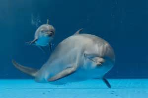

Il delfino
Il tursiope (Tursiops truncatus, Montagu, 1821) o delfino dal naso a bottiglia, è un cetaceo odontoceto appartenente alla famiglia dei Delfinidi. è una delle rare specie di delfini che sopporta la cattività; anche a causa di ciò è il più studiato e il più comune nei delfinari. è diffuso in tutti i mari del mondo, ad eccezione delle zone artiche ed antartiche e ne esistono due popolazioni distinte, una costiera ed una di mare aperto. Utilizza per cacciare la tecnica dell'ecolocalizzazione e si nutre principalmente di pesci. Raggiunge la maturità sessuale intorno ai 12 anni e le femmine partoriscono un solo piccolo. Vive generalmente in branchi formati dalle femmine ed i piccoli, mentre i maschi possono formare delle associazioni chiamate "alleanze". A causa dell'influenza dei media (il famoso delfino della serie televisiva Flipper era un tursiope), è diventato il delfino per antonomasia.
Sul capo è presente un melone pronunciato e la mascella e la mandibola allungate formano un rostro corto e tozzo[10], lungo circa 8 cm. L'aggettivo truncatus (latino: troncato), così come il nome comune inglese (Bottlenose Dolphin: delfino dal naso a bottiglia) si riferiscono proprio alla conformazione del rostro. Il muso è caratterizzato dalla presenza di una specie di "sorriso" dovuto al fatto che l'animale è impossibilitato a muovere le mascelle in altra posizione. Sulla porzione apicale del capo è presente lo sfiatatoio, attraverso cui il tursiope espelle l'aria respirata e la cui apertura e chiusura è dovuta a muscolatura volontaria. Quando lo sfiatatoio è aperto, è possibile osservare il setto nasale.
La pinna dorsale, di forma triangolare e ricurva, è alta circa 23 cm mentre le pinne pettorali, chiamate flipper, sono lunghe circa 30–50 cm. La pinna caudale, suddivisa in due lobi (flukes), è larga circa 60 cm. Pinna dorsale e pinna caudale sono entrambe costituite da tessuto connettivo, e al loro interno non sono presenti né ossa né muscoli. Invece le pinne pettorali presentano delle ossa omologhe a quelle dei Mammiferi terrestri da cui i Cetacei si sono evoluti circa 50 milioni di anni fa. Recentemente è stato scoperto in Giappone un tursiope con un paio addizionale di pinne pettorali poste vicino alla coda, aventi la dimensione di un paio di mani umane.
I tursiopi sono animali sociali, vivono in branchi chiamati pod e composti generalmente da 2-6 individui. Tuttavia non è raro osservare individui solitari, generalmente maschi. Infatti i pod sono costituiti da un gruppo di femmine con i loro piccoli e i maschi vi si uniscono solo per un breve tempo. Alcuni tursiopi vivono insieme ad altre specie di Cetacei.
Il cervello dei tursiopi è piuttosto grande e raggiunge dimensioni paragonabili a quello di una scimmia antropomorfa. Come nell'uomo è costituito da due emisferi, ma presenta una corteccia più sottile, sebbene più grande del 40% e con una complessità quasi equivalente a quella degli umani. Il suo sviluppo si completa in circa 10 anni.
Tutti i mammiferi, inclusi i delfini, durante il sonno attraversano una fase detta REM[51]. Il delfino è un respiratore volontario, anche mentre dorme, e ciò rende impossibile per i veterinari praticargli l'anestesia, che li porterebbe alla morte per asfissia. L'elettroencefalogramma ha mostrato come i delfini utilizzino solo un emisfero cerebrale a volta per il sonno probabilmente per controllare il sistema di respirazione volontaria.
Secondo alcuni autori, la grandezza del cervello del delfino è sinonimo di intelligenza e di potenziali capacità di linguaggio, mentre secondo altri la maggior parte del cervello viene utilizzata dal tursiope per il nuoto e per l'udito.
Non esiste ad oggi una definizione universalmente accettata di cosa sia l'intelligenza, ma una comunemente usata è "l'abilità a ragionare, pianificare, risolvere problemi, pensare in modo astratto, comprendere idee complesse, imparare velocemente e imparare dall'esperienza". Alcune ricerche mostrano come i delfini riescano eccezionalmente bene in alcune di queste abilità, superando il livello di intelligenza di uno scimpanzé[55]. Sembra inoltre che i delfini abbiano delle abilità matematiche, capacità altamente astratta[56]. Nel 1997 è stato descritto l'uso di utensili nei tursiopi della Shark Bay, in Australia. Un delfino attaccava sul suo rostro una spugna marina, presumibilmente per proteggere la bocca durante la ricerca del cibo nel substrato sabbioso. Questo comportamento è stato osservato solo nella Shark Bay, è mostrato quasi esclusivamente dalle femmine ed è l'unico caso conosciuto di uso di utensili nei mammiferi marini, ad eccezione delle lontre marine. Uno studio del 2005 ha dimostrato come questo comportamento venga insegnato dalle madri alle loro figlie.